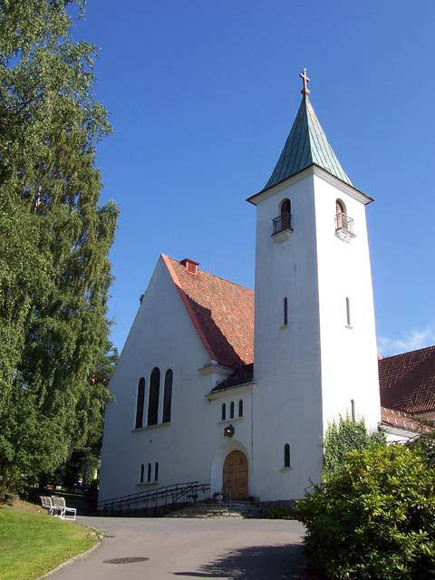
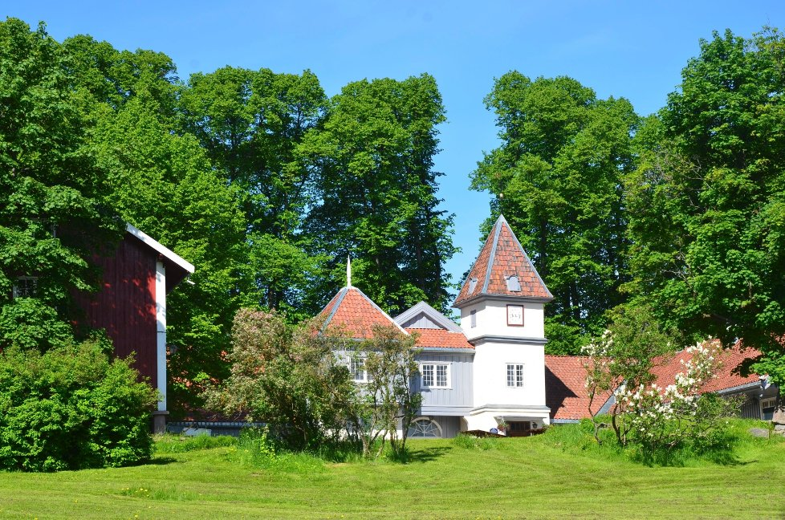

Vielsen finner sted i Bekkelaget Kirke kl 14:30, Sandstuveien 15
Etter vielsen reiser vi til Nordre Skøyen hovedgård for middag og fest.
For de som ønsker å forflytte seg med kollektivtransport tar det ca 30 min. Det raskeste alternativet er linje 4 fra Brattlikollen til Høyenhall.
Mest av alt ønsker vi oss bidrag til bryllupsreisen vår. Drømmen er å reise til New York denne høsten. Bidrag til reisen kan settes inn på konto 1207.83.92353.
Vi har også laget en ønskeliste hos Tilbords.
Ta kontakt med toastmaster Thomas Skjennald dersom du ønsker å holde en aldri så liten tale. Maks 5 minutter lang. Thomas nås på telefon 92686100 eller thomas@skjennald.no